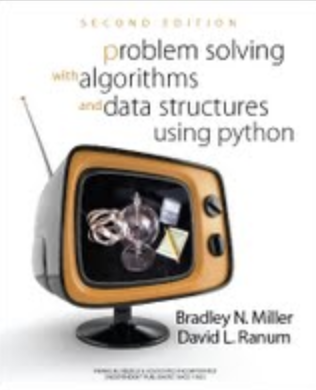

Reading List
目录
1 Reading List
1.1 TODO A Byte of Python
SCHEDULED:
en : https://python.swaroopch.com/
cn : https://bop.mol.uno/
1.2 TODO gevent程序员指南
- State "DONE" from "TODO"
- State "DONE" from "TODO"
- State "DONE" from "TODO"
SCHEDULED:
1.3 TODO Problem Solving with Algorithms and Data Structures using Python
SCHEDULED:

1.4 DONE 廖雪峰博客-python
- State "DONE" from "TODO"
- State "DONE" from "TODO"
博客内容主要时python基础,条理很清晰. 特别适合初学者学习python
1.5 TODO 算法
- State "DONE" from "TODO"
- State "DONE" from "TODO"
- State "DONE" from "TODO"
- State "DONE" from "TODO"
梳理近期算法文档 - State "DONE" from "TODO"
- State "DONE" from "TODO"
- State "DONE" from "TODO"

1.6 SOMEDAY 期权、期货及其衍生产品
- State "DONE" from "TODO"
一本期货教科书

1.7 DONE 算法图解
- State "DONE" from "TODO"

很适合入门的一本算法，图解，有趣
1.8 DONE 番茄工作法

很有效的量化工作，和提高工作效率的工作法,一直强迫自己使用emacs的番茄钟细化工作
1.9 DONE 卡耐基人际交往心理学
- State "DONE" from "TODO"

工作中遇到瓶颈的时候，准备找本心理学的书读读，结果读完，发现是本成功学!
能出版的书，总有他的道理，即便我不怎么喜欢，但它说的道理都是对的.
FTD (Fool things i have done) 书中提到一个很不错的idea，记录生活中自己
犯过的一些认为学要改正的蠢事
能回想起来对自己有价值的内容，也记录下:
- 勇于承认过错
- 空杯心态，低调做自己
- 事事无须追求完美，图曾烦恼
- 人人都喜欢受别人称赞
- 主动信任他人，才能最短时间内赢得信任
- 倾听、少说、不插话
- 争论中唯一获胜的方式就是避免争辩
1.10 DONE 深入理解Java虚拟机
- State "DONE" from "TODO"

1.11 TODO 算法之美
一本指导工作与生活的算法,将复杂的算法应用于决策生活
又是一本意料之外的书,不过还可以,休闲读物

1.在测试前37%样本前，不要轻易下结论